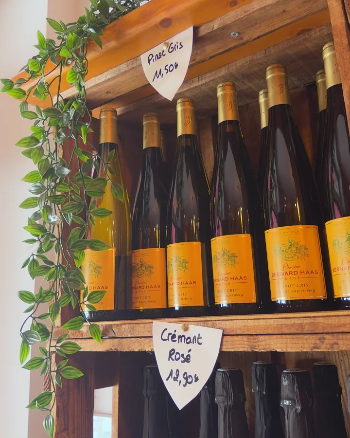

Les vins du Domaine Bernard Haas & Fils
Pinot gris et pinot blanc des Côtes de Kaysersberg, riesling et gewurztraminer du Grand Cru Schlossberg. Au verre dès 4 €, au pichet ou à la bouteille.
Les bouteilles en rayon se vendent aussi à emporter.
La carte des vins